Introdução
Uma boa alimentação traz inúmeros benefícios para o corpo e a mente. Ela fornece os nutrientes
essenciais que nosso organismo precisa para funcionar de maneira eficiente, ajudando a melhorar a
energia, o humor e a concentração no dia a dia. Uma dieta equilibrada também fortalece o sistema
imunológico, prevenindo doenças e promovendo a longevidade. Além disso, uma alimentação saudável
contribui para o controle do peso, melhora a saúde cardiovascular e reduz o risco de condições como
diabetes e hipertensão. Investir em uma nutrição adequada é um passo essencial para alcançar mais
disposição, bem-estar e qualidade de vida.
Calculadoras
Existem algumas calculadoras que são úteis para calcular métricas nutricionais importantes para
o seu desenvolvimento e consciência corporal, são bem simples e de fácil entendimento, veja abaixo
as possíveis de serem realizadas: (É recomendado que todas sejam feitas)
As calculadoras nutricionais desempenham um papel importante para quem busca uma alimentação equilibrada
e otimizada para suas necessidades de saúde e bem-estar. Elas fornecem uma maneira simples e eficaz de
monitorar a ingestão de nutrientes e calorias, ajudando a ajustar a alimentação de acordo com metas
específicas.
Efetue o Login no site para utilizar as calculadoras.

Índice de Massa Corporal (IMC)
O IMC (Índice de Massa Corporal) é uma medida usada para avaliar se uma pessoa está dentro de um
peso
considerado saudável em relação à sua altura. Ele é calculado dividindo o peso (em quilogramas) pela
altura (em metros) ao quadrado. Embora o IMC seja amplamente utilizado, ele não leva em consideração
a
composição corporal, como a proporção entre gordura e músculo, nem fatores como idade, sexo ou nível
de
atividade física.
A Taxa Metabólica Basal (TMB) é a quantidade de energia (calorias) que o corpo precisa para realizar suas
funções básicas enquanto está em repouso. Essas funções incluem respiração, circulação sanguínea, regulação
da temperatura corporal, funcionamento dos órgãos e manutenção das células. Em outras palavras, a TMB
representa a quantidade mínima de calorias que o corpo gasta para se manter vivo e funcional, sem incluir
atividades físicas ou digestão de alimentos.
Taxa Matabólica Basal (TMB)
Ingestão Hídrica
Uma ingestão hídrica adequada é fundamental para o corpo e traz inúmeras vantagens para o bom funcionamento do organismo. A água desempenha papéis essenciais nos processos biológicos, regulando a temperatura corporal, facilitando o transporte de nutrientes, e promovendo a circulação sanguínea. Ela também auxilia na digestão e no processo de absorção de vitaminas e minerais, que são fundamentais para a saúde.
 NutriLab
NutriLab